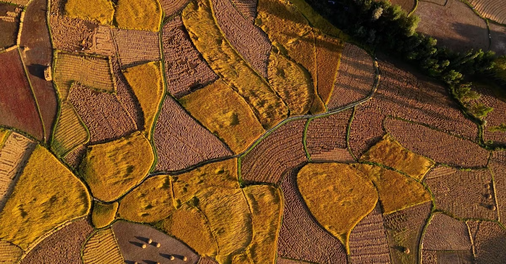

Crop / DiseaseNo active case
Database Live
GIS Geospatial Analysis
Kerala Central Zone
Live Sync

N
9.20°N – 9.35°N · 76.40°E – 76.55°E
2 km
Detection Pin
Avg Pairwise: —
Max Spread: —
Risk Analysis
Prototype spatial risk score
79 /100
HIGH
Input factors
AI Confidence92.4%
Detection count7
Affected farmers5
Proximity1.58 km
Humidity88%
Temperature28.5°C
Wind speed7.4 km/h
Detection Timeline
13:42
Farmer 0001
Late Blight detected
94% confidence
14:01
Farmer 0002
Late Blight detected
91% confidence
14:32
Farmer 0004
Late Blight detected
93% confidence
14:58
Threshold exceeded — priority event generated
15:08
Farmer 0007
Late Blight detected
92% confidence
Analysis SummaryProcessing pipeline
Disease detected by farmer app
Priority disease verified
Detection count calculated (7)
Multiple detections confirmed
Location coordinates extracted
Weather data attached
Spatial distance calculated (1.58 km)
Prototype risk score calculated (79/100)
Official verification required
Environmental Conditions
28.5°C
Temperature
88%
Humidity
7.4 km/h
Wind
Official Verification Status
Human verification — Stage 09/10
Does this event require an emergency farmer alert?
AI detection and computational analysis are evidence only. The final decision rests with the authorised official.
Report summary
Report ID—
Risk score—
Timestamp—
Recent Detections
Live Database Feed
| Obs. ID | Farmer | Crop | Disease | Confidence | Latitude | Longitude | Timestamp | Status | Action |
|---|---|---|---|---|---|---|---|---|---|
| Loading live database observations... | |||||||||